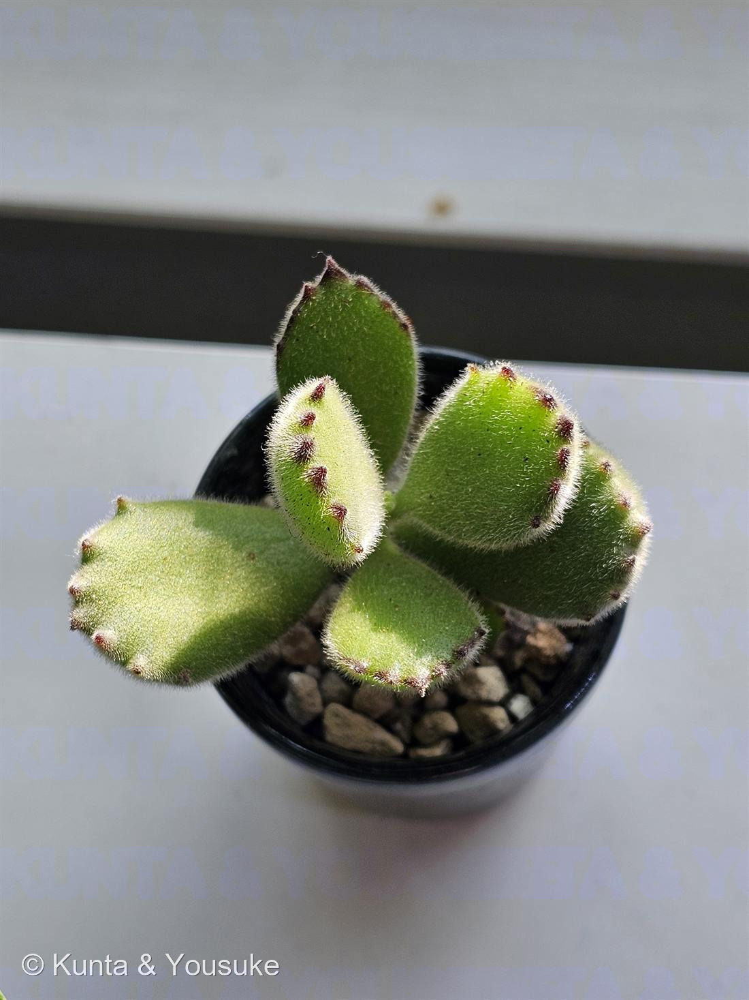
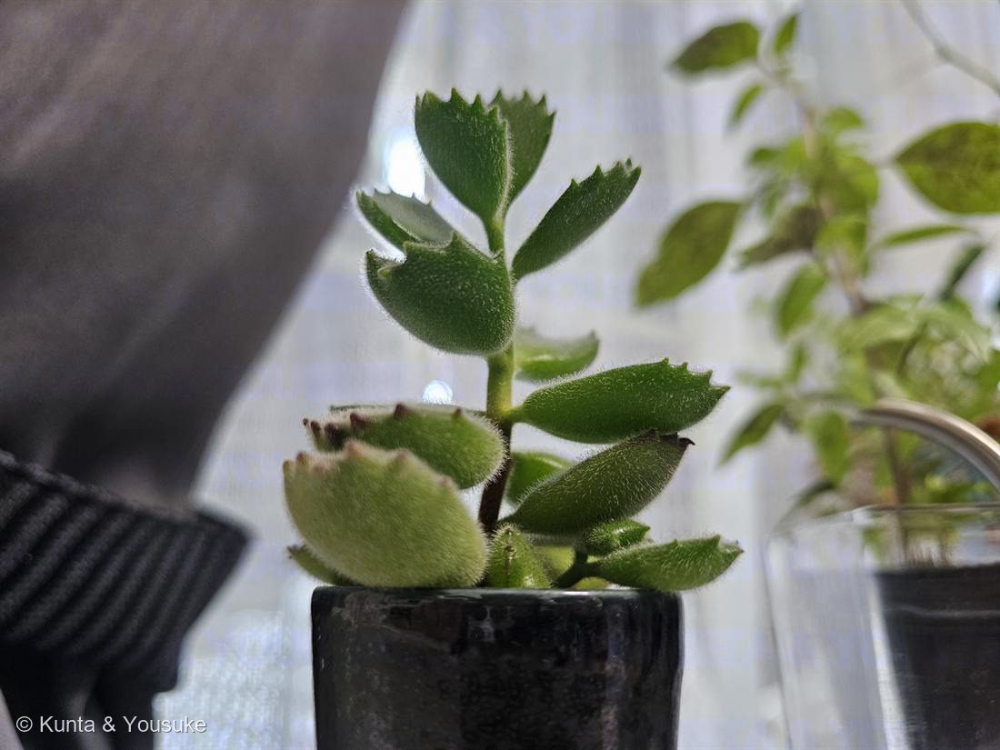

地図を読み込んでいるよ…
🔍 写真も地図も、押しているあいだ拡大して見られるよ（スマホは指を置いてすこし待ってね）。
🌍 の地図＝この子がもともと自生している場所を緑に。南アフリカ。
⚠ 地図は国（日本と中国だけ県・省）までしか塗れないから、ほんとうの分布より広く見えていることがあるよ。地図はだいたいの場所。正確なところは、上の文を見てね。
クマドウジ
Cotyledon tomentosa Harv.
別名 · ベアーズポー（Bear's Paw／クマの手）
ベンケイソウ科 · Crassulaceae（コチレドン属）
おうちの植物世話：陽介 · 旅先の花屋でお迎えようすけと“お手て”がおそろい
名前と学名の由来
- Cotyledon（コチレドン）＝ギリシャ語 kotyle（お椀・くぼみ）から。葉のくぼんだ形にちなむ（「子葉 cotyledon」と同語源）。
- tomentosa（トメントーサ）＝ラテン語で「密に軟毛のある（tomentose）」。葉一面のふわふわの毛にちなむ。
この植物のこと
- ベンケイソウ科コチレドン属の多肉植物。南アフリカ原産。ぷっくりした葉に短い綿毛が密生し、葉の先に赤褐色の「爪」のような歯が数個並ぶ。これがクマの手（肉球＋爪）に見えるので熊童子、英名ベアーズポー。
- 多肉なので葉に水をためる。ふわふわの毛は強い日ざしや乾燥から身を守るはたらき。春と秋に育つ「春秋型」の多肉。
- 徒長（とちょう）に注意：光が足りないと茎がひょろ長く伸び、葉の間隔が広がる（写真②）。日によく当てると、また節が詰まって引き締まる。
- 変わった毒をもつ：コチレドン属（と近縁の Tylecodon・Kalanchoe）はブファジエノリド系の強心配糖体をつくる。とくに Cotyledon 由来のコチレドシドは体に蓄積するタイプで、南アフリカでヒツジ・ヤギに慢性麻痺性中毒「クリンプシークテ（縮み病）」を起こす。ブファジエノリドは細胞のナトリウムポンプ（Na⁺/K⁺-ATPアーゼ）を止める神経毒＝食べられないための化学防御。“bufa”はヒキガエル(Bufo)の毒と同じ骨格。
- 茎の先に、オレンジ〜赤の釣鐘形の花をつけることがある。斑入りの「熊童子錦」もある。姉妹の「子猫の爪」（Cotyledon ladismithiensis）は葉が細長く先の爪が3本。
参考：Succulents and Sunshine／Gardenia／HORTI（GreenSnap）・LOVEGREEN